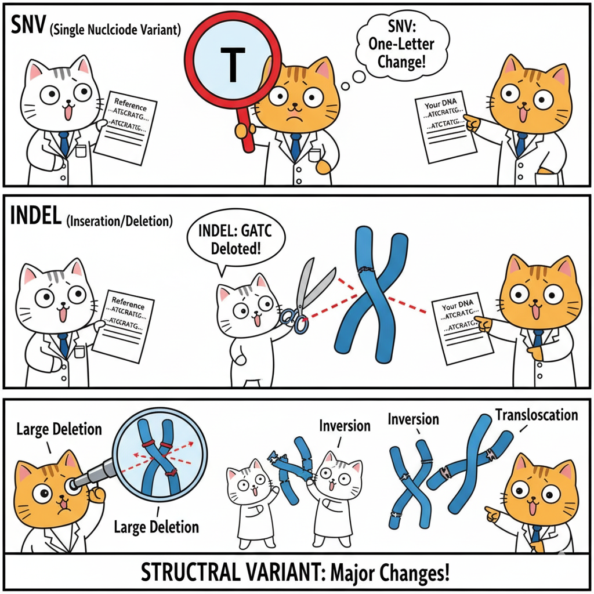

Genetic Variants: Reading the Differences in Our DNA
The Molecular Basis of "Different"
When Mendel crossed purple-flowered and white-flowered pea plants, he observed that the offspring followed predictable patterns. He didn't know what made the flowers purple or white—he just knew that some invisible "factor" was responsible for the difference.
Today, we can answer Mendel's question at the molecular level. The difference between purple and white flowers isn't mysterious—it's a change in DNA sequence. Somewhere in the genome, there's a position where purple-flowered plants have one base (let's say an A) and white-flowered plants have a different base (maybe a G). That single-letter difference is what we call a genetic variant.
This chapter is about understanding genetic variants—what they are, how we classify them, and what effects they can have. When you sequence someone's genome, you don't just get one long string of As, Ts, Gs, and Cs. You get differences—millions of positions where this person's sequence differs from the reference genome or from other people. Understanding these differences is the foundation of modern genetics.
Terminology: Mutation, Variant, or Polymorphism?
Before we dive into types of variants, we need to clarify some terminology that's often used inconsistently in genetics. You'll see the words mutation, variant, and polymorphism used somewhat interchangeably in papers and textbooks, but they have different connotations.
Mutation: A Change, Often Implying Disease
The word mutation comes from the Latin mutatio, meaning "change." Technically, a mutation is any alteration in the DNA sequence compared to some reference—usually a parent's sequence or a standard reference genome.
How it's used in practice:
In modern genetics, "mutation" often carries a negative connotation—it implies the change is rare and potentially harmful. When someone says "BRCA1 mutation," they usually mean a rare DNA change that increases cancer risk. When cancer researchers talk about "driver mutations," they mean changes that help tumors grow.
Example: A patient has a change in the CFTR gene that causes cystic fibrosis. We'd typically call this a "CFTR mutation" because it's rare (not present in most people) and clearly causes disease.
Variant: A Neutral, General Term
Variant is the most general term—it simply means any difference in DNA sequence, regardless of how common it is or what effect it has. A variant might be harmless, beneficial, or disease-causing. The term doesn't imply anything about frequency or function.
How it's used in practice:
"Variant" is the preferred term in modern genomics because it's neutral. When you sequence someone's genome and find differences from the reference, you call them "variants" until you know whether they're harmful or benign.
Example: Variant calling software identifies millions of "variants" in each genome. Most are harmless differences that make you unique. A few might cause disease. You don't know which category each falls into initially, so you call them all "variants."
Polymorphism: Common Variation
Polymorphism (from Greek poly = many, morph = form) refers to variants that are common in a population—traditionally defined as present in at least 1% of people, though this threshold is somewhat arbitrary.
How it's used in practice:
"Polymorphism" usually implies the variant is benign or has only minor effects. If a DNA change causes severe childhood disease, it wouldn't be common in the population (natural selection would eliminate it). So common variants—polymorphisms—are generally harmless or have subtle effects.
Example: The ABO blood type gene has several common variants (polymorphisms) that determine whether you're blood type A, B, AB, or O. These are very common—none is "wrong" or disease-causing.
The most famous type is SNP (Single Nucleotide Polymorphism)—pronounced "snip"—a common single-base difference.
So Which Term Should You Use?
Here's a practical guide:
- Variant: Default term when discussing any DNA difference. Safe and neutral.
- Mutation: Use when emphasizing that a change is rare and/or causes disease. Common in medical genetics and cancer research.
- Polymorphism: Use when emphasizing that a change is common in populations and generally benign.
The relationship:
Think of it as nested categories:
- Variant is the big umbrella—includes everything
- Mutations are rare variants, often (but not always) harmful
- Polymorphisms are common variants, usually benign
All mutations and polymorphisms are variants, but not all variants are mutations or polymorphisms.
In this chapter, we'll mostly use "variant" as the general term, specifying "pathogenic variant" or "common variant" when we need to be more specific.
Classifying Variants by Size
Genetic variants come in different sizes, from single-base changes to rearrangements of entire chromosomes. The size of a variant affects how it's detected and what impact it might have.
Let's start with the smallest and work our way up.
Single Nucleotide Variants (SNVs): One-Letter Changes
An SNV (Single Nucleotide Variant) is the simplest type—a single base differs from the reference. For example:
Reference: ...ATGCGATCG...
Your DNA: ...ATGCTATCG...
One G became a T. That's an SNV.
How common are they?
If you compare your genome to the reference, you'll have about 4-5 million SNVs. That's roughly one difference every 600-800 bases. Most of these are shared with other people (they're polymorphisms), but about 50,000-100,000 will be rare or unique to you.
Where do they occur?
SNVs can happen anywhere—in genes, between genes, in regulatory regions. Their effect depends entirely on location:
- In a coding region, changing one base might change an amino acid in a protein
- In a regulatory region, it might affect gene expression
- In most of the genome (the 98% that doesn't code for proteins), it probably does nothing
Detection:
Both WGS and WES can easily detect SNVs. This is the "bread and butter" of variant calling—the simplest and most reliable variants to identify.
Insertions and Deletions (Indels): Small Additions or Losses
An indel (insertion-deletion) is a small piece of DNA that's added or removed. "Indel" is often used generically, though technically an insertion adds bases and a deletion removes them.
Size range: Typically 1-50 base pairs, though the cutoff is arbitrary.
Examples:
Deletion:
Reference: ...ATGCGATCG...
Your DNA: ...ATGCGATCG... (CGA deleted)
Insertion:
Reference: ...ATGCGATCG...
Your DNA: ...ATGCAAAGATCG... (AAA inserted)
Why size matters:
The effect of an indel depends critically on its size, particularly in coding regions:
- If the indel size is divisible by 3 (3, 6, 9, etc. bases), it adds or removes complete amino acids without shifting the reading frame. This is called an in-frame indel.
- If the size is NOT divisible by 3 (1, 2, 4, 5, etc.), it causes a frameshift—shifting how the rest of the gene is read, usually with catastrophic effects on the protein.
We'll explain this in detail when we cover coding variants below.
How common are they?
Much less common than SNVs. You might have 400,000-500,000 small indels in your genome compared to 4-5 million SNVs.
Detection:
Both WGS and WES can detect small indels, though they're slightly harder to call accurately than SNVs, especially in repetitive regions (like AAAAAAA—how many As are there really?).
Structural Variants (SVs): Large-Scale Changes
Structural variants are big changes—typically defined as larger than 50 base pairs, though some use 1,000 bp as the cutoff. They include:
- Large deletions: A chunk of DNA is missing (could be thousands or millions of bases)
- Large insertions/duplications: Extra copies of DNA segments
- Inversions: A DNA segment is flipped in orientation
- Translocations: DNA from one chromosome ends up on another
- Copy number variants (CNVs): Varying numbers of copies of large DNA segments
Example: A deletion
Reference: ...ATGCGA[50,000 bases]TCGAAT...
Your DNA: ...ATGCGATCGAAT... (50 kb deleted)
Why they matter:
Structural variants can:
- Delete entire genes or parts of genes
- Duplicate genes (causing extra copies)
- Disrupt multiple genes at once
- Move genes to new chromosomal contexts, affecting their regulation
About 1,000-2,000 structural variants differ between any two people, affecting more total base pairs than all the SNVs combined, even though SVs are much fewer in number.

Detection challenges:
SVs are hard to detect accurately, especially with short-read sequencing (Illumina):
- Deletions can be inferred when reads suddenly stop mapping to a region
- Duplications can be inferred from increased read depth
- Inversions and translocations require reads spanning the breakpoint, which is difficult with 150 bp reads
Long-read sequencing (PacBio, Oxford Nanopore) is much better at detecting SVs because reads can span entire structural variants.
WGS vs. WES:
- WGS can detect SVs throughout the genome
- WES is poor at detecting SVs because the capture process requires intact DNA. If an exon is deleted, there's nothing to capture—you just see low or absent coverage, which could mean deletion or poor capture efficiency.
Classifying Variants by Location and Effect
Now let's think about variants differently—not by size, but by where they occur and what they do.
The human genome isn't uniform. Some regions code for proteins (exons), some don't (introns, intergenic regions), and some regulate when and where genes are expressed (promoters, enhancers). A variant's effect depends heavily on where it lands.
Coding vs. Non-Coding: A Fundamental Distinction
Coding regions (exons): The parts of genes that are translated into proteins. These make up only about 1-2% of the genome, but they're where most known disease-causing variants occur. Why? Because proteins do most of the work in cells, and disrupting a protein often has obvious consequences.
Non-coding regions (everything else): Introns (within genes but not translated), intergenic regions (between genes), and regulatory elements (promoters, enhancers, etc.). These make up 98-99% of the genome. Many non-coding regions are functionally important for gene regulation, but their roles are less well understood.
Why this distinction matters:
- Coding variants often have clear, predictable effects (change this amino acid to that one)
- Non-coding variants often have subtle, context-dependent effects (might affect gene expression in certain tissues or conditions)
- When you do WES, you're only seeing coding variants (and nearby splice sites)
- When you do WGS, you see everything, but interpreting non-coding variants is much harder
Let's explore each category in detail.
Coding Variants: Changing the Protein
Coding variants occur in exons—the parts of genes that are translated into proteins. To understand their effects, you need to remember some basic molecular biology.
A Quick Review: The Genetic Code
DNA is read in units of three bases called codons. Each codon specifies one amino acid (or a stop signal). For example:
- ATG = Methionine (start codon)
- GAA = Glutamic acid
- GCA = Alanine
- TAG = Stop
There are 64 possible codons (4³) but only 20 amino acids, so the code is redundant—multiple codons can specify the same amino acid. For example, both GAA and GAG code for glutamic acid.
This redundancy is why some DNA changes don't change the protein.
Types of Coding Variants
1. Synonymous Variants: Silent Changes
A synonymous variant (also called a silent mutation) changes the DNA sequence but doesn't change the amino acid.
Example:
Reference DNA: GAA (codes for glutamic acid)
Variant DNA: GAG (also codes for glutamic acid)
The third position changed (A→G), but because of the redundancy of the genetic code, both codons specify the same amino acid. The protein sequence is unchanged.
Are they really "silent"?
Not always! While the amino acid doesn't change, synonymous variants can still have effects:
- They might affect how efficiently the gene is translated
- They could affect mRNA stability
- If they're near exon boundaries, they might affect splicing (more on this below)
But in general, synonymous variants are the least likely to cause problems. They're usually benign.
Frequency: About 25% of base changes in coding sequences are synonymous due to codon redundancy.
2. Missense Variants: Amino Acid Substitutions
A missense variant changes one amino acid to a different amino acid.
Example:
Reference: GAA → Glutamic acid (Glu)
Variant: GCA → Alanine (Ala)
The protein is made with alanine instead of glutamic acid at this position.
What's the effect?
It depends on the amino acids and the protein context:
Sometimes benign:
- If the amino acids are similar in properties (e.g., both hydrophobic), the protein might function normally
- If the position is on the protein's surface in a non-critical region, the change might not matter
Sometimes harmful:
- If the amino acids have very different properties (e.g., charged vs. uncharged), protein folding or function might be disrupted
- If the position is in a critical functional region (e.g., active site of an enzyme), even a subtle change can destroy function
Classic example: Sickle cell disease
In the HBB gene (beta-globin, part of hemoglobin):
- Normal: GAG → Glutamic acid (hydrophilic, charged)
- Sickle: GTG → Valine (hydrophobic, uncharged)
This single amino acid change causes hemoglobin molecules to stick together, deforming red blood cells into a sickle shape. One missense variant causes a serious disease.
Prediction challenge:
Given a missense variant, predicting whether it's harmful is difficult. Tools like REVEL, CADD, and AlphaMissense help, but they're not perfect. This is why many missense variants are classified as "Variants of Uncertain Significance" (VUS) in clinical reports.
3. Nonsense Variants: Premature Stop Signals
A nonsense variant (also called stop-gained) changes an amino acid codon into a stop codon.
Example:
Reference: CAG → Glutamine (Gln)
Variant: TAG → Stop
Translation stops prematurely, producing a truncated (shortened) protein.
Effect:
Almost always harmful. Truncated proteins usually don't fold properly or lack critical functional regions. This is a loss-of-function (LoF) mutation—the gene no longer produces a working protein.
Example: Cystic fibrosis
Many CFTR mutations that cause cystic fibrosis are nonsense variants. The truncated CFTR protein can't function as a chloride channel, causing thick mucus buildup in lungs and other organs.
Exception: Nonsense-mediated decay (NMD)
Often, cells recognize mRNAs with premature stop codons and destroy them through a process called nonsense-mediated decay. This prevents production of truncated proteins that might be toxic. So the result is often "no protein" rather than "truncated protein."
4. Frameshift Variants: Scrambling the Message
Remember that DNA is read three bases at a time: ATG|CAT|GCA|TTG...
A frameshift variant is an insertion or deletion whose size is NOT divisible by 3. This shifts the reading frame, changing how all downstream codons are read.
Example of a 1-base deletion (frameshift):
Reference: ATG|CAT|GCA|TTG|AAA...
Met-His-Ala-Leu-Lys...
Deletion: ATG|CA_|GCA|TTG|AAA...
ATG|CAG|CAT|TGA|AA...
Met-Gln-His-Stop...
By removing one T, we've shifted the frame. The sequence after the deletion is read completely differently, producing the wrong amino acids and usually hitting a stop codon soon after (since stop codons are relatively common if you're reading in the wrong frame).
Effect:
Nearly always harmful. Frameshift mutations are another major class of loss-of-function variants.
Example: Duchenne muscular dystrophy
Many cases are caused by frameshift mutations in the DMD gene (dystrophin). The resulting protein is nonfunctional, causing progressive muscle degeneration.
5. In-Frame Indels: Neat Additions or Removals
An in-frame indel is an insertion or deletion whose size IS divisible by 3. This adds or removes complete amino acids without shifting the reading frame.
Example of a 3-base deletion (in-frame):
Reference: ATG|CAT|GCA|TTG|AAA...
Met-His-Ala-Leu-Lys...
Deletion: ATG|CAT|_|TTG|AAA...
ATG|CAT|TTG|AAA...
Met-His-Leu-Lys... (Ala is missing)
The reading frame is preserved. One amino acid is deleted, but the rest of the protein sequence is correct.
Effect:
Variable—depends on what's added/removed and where:
- Might be benign: If the amino acid(s) are in a non-critical region
- Might be harmful: If they're in a functional domain
Example: EGFR deletions in lung cancer
Small in-frame deletions in the EGFR gene (epidermal growth factor receptor) are common in lung tumors. These deletions remove a few amino acids and make the receptor hyperactive, driving tumor growth. Patients with these deletions often respond well to EGFR inhibitor drugs.
Non-Coding Variants: Beyond the Protein
Most of your genome (98-99%) doesn't code for proteins. Non-coding variants can still have important effects, but they're harder to interpret.
Where Do Non-Coding Variants Occur?
Introns: The parts of genes that are transcribed but then removed before translation. Introns contain important elements for RNA splicing.
Intergenic regions: The DNA between genes. Much of this is "filler," but some regions contain regulatory elements.
Regulatory regions: Promoters (near the start of genes), enhancers (sometimes far from genes), silencers, and other elements that control when and where genes are expressed.
UTRs (Untranslated Regions): The 5' UTR (before the start codon) and 3' UTR (after the stop codon) are part of the mRNA but not translated. They affect mRNA stability and translation efficiency.
Types of Non-Coding Variants
1. Splice Site Variants: Breaking the Splicing Code
Background: Genes are transcribed into pre-mRNA that includes both exons and introns. The introns must be precisely cut out (spliced) to produce mature mRNA. This happens at splice sites—specific sequences at exon-intron boundaries.
Canonical splice sites:
- 5' splice site (donor): Almost always GT at the start of each intron
- 3' splice site (acceptor): Almost always AG at the end of each intron
Canonical splice site variants:
If a mutation changes the GT or AG, splicing usually fails catastrophically:
- The intron might not be removed
- Nearby "cryptic" splice sites might be used instead
- The exon might be skipped entirely
Any of these can disrupt the protein, often causing frameshift or nonsense mutations in the resulting mRNA.
Example:
A GT→AT mutation at a 5' splice site means the splicing machinery can't recognize that intron boundary. The cell might:
- Keep the intron in the mRNA (introduces stop codons)
- Skip the adjacent exon (deletes part of the protein)
- Use a nearby weak splice site (inserts or deletes wrong sequence)
Result: Usually loss of function.
Clinical example: BRCA2 splice site mutations are a common cause of hereditary breast cancer. The splice defect leads to a non-functional BRCA2 protein.
Non-canonical splice site variants:
Even mutations near splice sites (within ~10-20 bp) can weaken splicing without completely breaking it. These might cause:
- Reduced splicing efficiency (less normal mRNA produced)
- Partial use of cryptic sites (mix of normal and abnormal mRNA)
These are trickier to interpret and predict.
2. Deep Intronic Variants: Usually Benign, Occasionally Surprising
Most intronic sequence far from splice sites (>20-30 bp away) doesn't affect gene function. These variants are usually benign.
Exceptions:
- Cryptic splice site creation: A mutation might create a new sequence that looks like a splice site, causing mis-splicing
- Regulatory elements: Some introns contain enhancers or other regulatory sequences
Example:
An intronic variant in FBN1 (fibrillin-1 gene) was found to cause Marfan syndrome by creating a cryptic splice site, leading to abnormal splicing and a truncated protein. This was surprising because the mutation was deep in an intron, far from the canonical splice sites.
3. Regulatory Variants: Subtle Effects on Gene Expression
Variants in promoters, enhancers, or silencers can affect how much of a gene's mRNA and protein are produced, or in which tissues.
5' regulatory variants (promoters, 5' UTR):
- Can affect transcription factor binding
- Can affect mRNA stability or translation initiation
Example: A variant in the HFE gene promoter affects iron metabolism, contributing to hemochromatosis (iron overload).
3' regulatory variants (3' UTR, polyadenylation signals):
- Can affect mRNA stability
- Can affect microRNA binding
Example: Variants in the 3' UTR of TP53 (the major tumor suppressor) can affect how microRNAs regulate p53 expression, potentially affecting cancer risk.
Enhancer variants:
Enhancers can be located far from the genes they regulate—sometimes hundreds of thousands of bases away. A variant in an enhancer might:
- Increase gene expression (gain of function)
- Decrease gene expression (loss of function)
- Change tissue specificity (gene expressed in wrong tissues)
Example: A variant 100 kb upstream of the MYC oncogene affects an enhancer, increasing MYC expression and contributing to cancer.
Challenge:
Unlike coding variants, where we can predict the amino acid change, regulatory variants are much harder to interpret. We don't always know:
- Which gene a distant enhancer regulates
- How much expression change is needed to cause disease
- Whether the effect is tissue-specific or condition-dependent
This is an active area of research.
4. Intergenic Variants: Mostly Neutral
Variants in regions far from any gene are usually neutral—just normal variation with no functional consequence.
But: Some intergenic variants affect distant regulatory elements or, in rare cases, affect genes through long-range chromatin interactions.
The challenge: Distinguishing functional intergenic variants from neutral ones is very difficult.
Summary: Variant Classification at a Glance
Let's bring this all together with a practical framework for thinking about variants:
By Size:
- SNVs: 1 base change
- Small indels: 1-50 bp insertions/deletions
- Structural variants: >50 bp (often >1,000 bp)
By Location:
- Coding (in exons): Directly affect protein sequence
- Non-coding (introns, intergenic, regulatory): Affect splicing, expression, or nothing
By Effect (Coding):
- Synonymous: No amino acid change (usually benign)
- Missense: Different amino acid (variable effect)
- Nonsense: Premature stop (usually harmful)
- Frameshift: Reading frame shift (usually harmful)
- In-frame indel: Add/remove amino acids (variable effect)
By Effect (Non-Coding):
- Splice site: Disrupt splicing (often harmful)
- Regulatory: Affect gene expression (variable effect)
- Intronic/intergenic: Usually neutral
By Frequency:
- Common (>1%): Polymorphisms, usually benign
- Rare (<1%): More likely to be mutations, more likely to be harmful
By Functional Impact:
- Loss of function (LoF): Gene doesn't work (nonsense, frameshift, splice site)
- Gain of function: Gene works too much or in wrong context (rare)
- Change of function: Gene works differently (some missense)
- Neutral: No effect (synonymous, most intergenic)
WGS vs. WES: Which Variants Can You See?
Finally, let's connect this back to sequencing strategies:
| Variant Type | WGS | WES | Notes |
|---|---|---|---|
| Coding SNVs | ✓ | ✓ | Both detect well |
| Coding indels | ✓ | ✓ | Both detect well |
| Synonymous | ✓ | ✓ | Both detect |
| Missense | ✓ | ✓ | Both detect |
| Nonsense | ✓ | ✓ | Both detect |
| Frameshift | ✓ | ✓ | Both detect |
| Canonical splice sites | ✓ | ✓ | WES captures exon boundaries |
| Deep intronic | ✓ | ✗ | WES misses most introns |
| Regulatory (promoter, enhancer) | ✓ | ✗ | WES misses non-coding regions |
| Intergenic | ✓ | ✗ | WES misses between genes |
| Small SVs (<1 kb) | ✓ | ~ | WES can partially detect |
| Large SVs (>1 kb) | ✓ | ✗ | WES usually misses |
Key takeaway:
- WES covers coding variants very well but misses most non-coding and structural variants
- WGS covers everything but generates more data to interpret, especially for non-coding variants where functional effects are unclear
Clinical implication:
This is why WES works well for Mendelian diseases (usually caused by coding variants) but WGS is needed when WES is negative or when you suspect regulatory or structural variants.
Looking Ahead
Understanding variant types and their consequences is foundational for modern genetics. In the next sections, we'll explore:
- How Mendelian inheritance patterns manifest at the variant level
- How variants segregate in families
- How to use variant data to map disease genes
- How population genetics and evolutionary forces shape variant frequencies
All of this builds on the framework we've established here: variants are the molecular differences that create alleles, and alleles follow Mendel's rules of inheritance—but now we can see them directly in the DNA sequence.